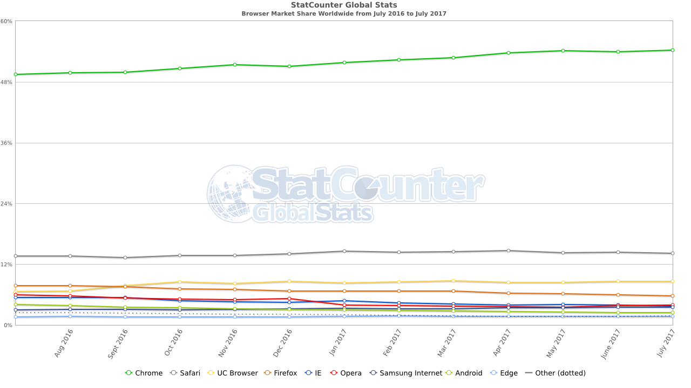

Introduction to Web Concepts
or
What is that Web Developer talking about?
Welcome!
Girl Develop It is here to provide affordable and accessible programs to learn software through mentorship and hands-on instruction.
Some “rules”
- We are here for you!
- Every question is important
- Help each other
- Have fun
Welcome!
Tell us about yourself.
- Who are you?
- What do you hope to get out of the class?
- What’s your fav ice cream flavor?
What we’ll cover
-
Basic concepts
- How the web works
- Different parts of a basic web app
- Terms & technologies
- Common terms
- Common languages, libraries, and frameworks for each part of the stack
- Web development professionals
- Team structure
- Hiring developers
- Becoming a developer
Goals
- This is a survey of a very broad topic
- Feel more confident about some basic tech concepts
- Help get a sense of what you’d like to know more about
Guidelines
- I don’t know everything, and neither will you
- Ask questions!
- Have fun!
Concepts
What is the world wide web?

A typical web site will live or is hosted on a web server. Web servers are computers connected to a network.
Home and daily life of a web site
- Type a web site address into the address bar
- DNS converts the human readable website name to the server’s IP (internet protocol) address and connects you to the hosting server
- The files are then sent back to your computer for display
- The browser on your computer interprets how to display the files
- Sometimes code must be compiled before being sent back to you.
WWW Terms
IP Address: Internet Protocol Address - A unique address for a computer or a server.
Some IP Addresses are only unique to the network they are on while others are completely unique.
These look like random numbers, e.g. http://28.206.186.232
DNS: Domain Name Service - A directory that associates domain names with host IPs to allow users to connect to web sites via URLs. This separation is important because memorizing numbers is hard, but also because in most professional applications, IP addresses change regularly.
Clients vs. Servers
Clients make requests, servers fulfill them (usually).
For our web discussions, client = browser, but search engine crawlers, command line interfaces, and other applications can also behave as clients.
While any type of computer can be used as a server, they are generally larger and more powerful than others.
You may hear large/powerful servers called beefy.
Browsers
Basic parts of a web app
Terms & Technologies
Terms
HTML: Hyper Text Markup Language - The coding format used to convey the structure and content of a web site
CSS: Cascading Style Sheets - A language used to describe the presentation of the content
WYSIWYG: What You See Is What You Get - A type of editing software meant to be used by those who don’t know how to code
WYSIWYG vs. hand-coding
- WYSIWYG code editors make general assumptions about what you intended to write which often is not accurate or best
- They make the job of professionals much more difficult when the code is written poorly and filled with junk
- To truly understand what you are building, you need to learn the fundamental components
- Once you know how to code by hand, there are no limits to what you can build!
IDE: Integrated Development Environment - Software meant to support the entire development process, often including compilation for a server-side language. A developer’s main productivity tool.
CMS: Content Management System - A program that allows publishing, editing, and modifying content as well as maintenance from a central interface
Open source: A program in which the source code is available to the general public for use and/or modification from its original design
API: Application Programming Interface - A contract between an application and the world. The interface defines how other applications can interact with the underlying system the API represents.
REST: REpresentational State Transfer - A particular kind of API commonly used by web applications. It uses HTTP verbs and has a defined W3 specification.
RPC: Remote Procedure Call - Another kind of API. Less common than REST.
SEO: Search Engine Optimization - The process of increasing your web site’s perceived value to search engine algorithms, raising its rank in search results
Web 2.0: Buzzword generally describing a trend towards interactivity, rich media, and social engagement in web design
The Cloud: Services and technology that offer remote storage, processing, or other functionality by way of the internet
Programming language: A set of special commands and instructions (usually relatively readable by humans) that tell the computer what to do. These usually have to be compiled.
Compile: Converting a human-readable (high-level) programming language into a lower-level language that the computer understands.
Transpile: A portmaneau of compile and translate. To convert a programming langauge to another language that has a similar level of abstraction. A common example is transpiling ES6+ Javascript to ES5 syntax so browsers can understand it.
Library: A package of related code. For example, moment.js is a cross-broswer compatible JavaScript library for date manipulation and formatting. Other examples: jQuery, React, Backbone, Prototype, Mootools
Framework: In general, a framework is a way of structuring application code. Frameworks often include a set of libraries, and the line between frameworks and libraries can sometimes be blurred. Frameworks tend to be more opinionated than libraries. Examples: Angular, Flask, Django, Rails, Cake
Specification: A set of currently acceptable rules for a given language. For example, HTML5 expands on the HTML4 spec and deprecates some older HTML syntax.
The Stack: (development stack) - The set of languages, libraries, frameworks, and other technologies that an application or development team uses.
Microservice: A way of breaking up an application into small, focused parts that can make development and maintenance faster and easier, but increases dependencies.
Common technologies by part of the stack
Client-side:
- HTML
- CSS
- JavaScript
- Flash (with plugin) #flashIsDead
Sever-side:
- Java (JVM: Scala, Clojure, etc.)
- .Net
- Python
- Ruby
- Javascript
- PHP
- Perl
- C++
- C
Java != JavaScript
Java:
- Server-side
- Object-oriented
- Requires special parser (JVM)
- Originally by Sun Microsystems, now part of Oracle
JavaScript (JS):
- Primarily client-side, although, e.g. node runs on the server
- Uses different paradigms like prototypical inheritance. Always async.
- Parsed by any browser
- Originally by Netscape
Databases:
- PostgreSQL
- MySQL
- MSSQL (SQL Server)
- Oracle
- Cassandra
- MongoDB
- Neo4j
DevOps:
- Docker
- Kubernetes
- Chef
- Puppet
- Salt
- Nagios/Icinga
- Bash scripts
There is no language to rule them all
All these languages, libraries, frameworks, and technologies are tools. Which one you need depends on what problem you’re trying to solve and the constraints that you are under.
Programming technologies are commonly compared to a tool set: A hammer is a great choice if you are trying to get nails into a piece of wood, but probably not the best choice if you are trying to loosen a screw.
Hello world
PHP
echo "Hello, world!";
Java
class HelloWorld {
static public void main( String args[] ) {
System.out.println( "Hello World!" );
}
}
Hello world
Python
'Hello, world!'
Ruby
puts 'Hello, world!'
Hello world
JavaScript
Not server-side, but just for example
document.writeln('Hello, World!');
Tools of the trade
To build your web site, you will probably need:
- A simple text editor or code editor such as SublimeText, Atom, or Notepad to write your code. Many can be found for free.
- A web browser such as Chrome, Firefox, or Safari to test your code. All popular modern browsers are free.
Tools of the trade
You will also need:
- An FTP (file transfer protocol) client such as WinSCP, Cyberduck, or CoffeeCup FTP to get files from your computer to the server. Many are free.
- Optionally, an image editor such as IrfanView, Gimp, or Photoshop to edit images which will be used on the web site. Some are available for free.
Web development professionals
Meet the web team
- Front end
- Web Developer, Software Engineer
- Back end
- Software Engineer
- Database Admin
- DevOps/Infrastructure
- Server Admin
- DevOps Engineer
- Full-stack*
- Others
- QA Engineer
- Project Manager
- Graphics and/or UX Designer
What to consider when looking for a dev
A developer’s main job is to solve problems.
- Look for smart people. Look for problem solvers.
- Can they pick up new tools and techniques? Experience in tools & projects can be better than just experience in years. But beware of ageism.
- Communication and communication style matter.
- Recommendations and references can be useful.
- Ask for samples of their prior work and ask exactly which parts of the process they were responsible for.
Getting started in development
- Pick a language. They’ll all pretty similar.
- Degrees and certifications: they don’t hurt
- Be curious, a problem solver, and intrepid
- Explore. Don’t be afraid of doing something wrong.
- Build things. For yourself, if no one will pay you
- Break things. It’s part of how you learn. Take things apart to figure out how they work.
- Programming is a craft. It’s part science and part art. Experience will hone your judgement.